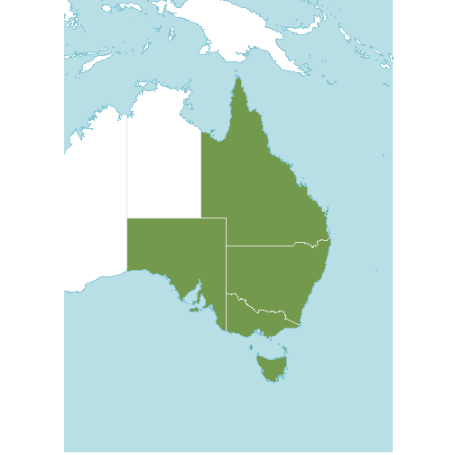
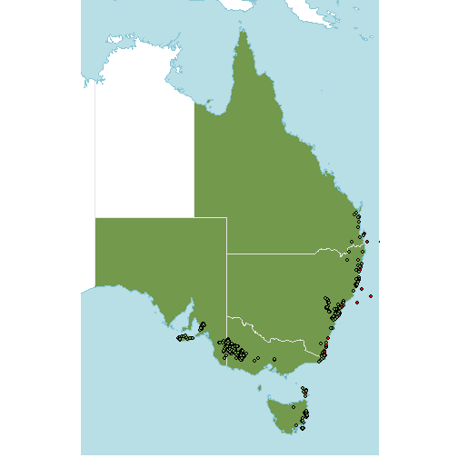
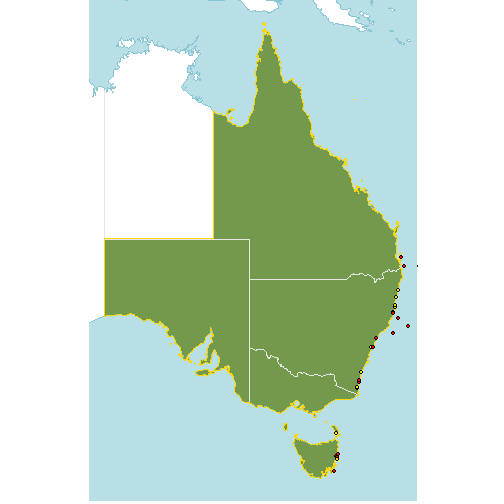
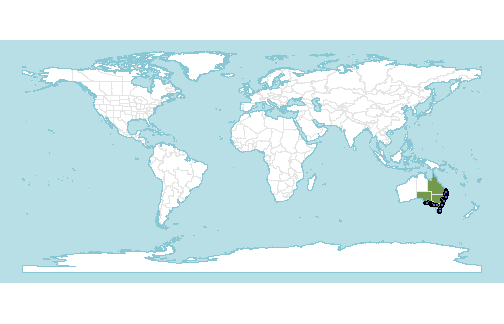

Cleaning coordinates to species' native range with rWCVP
Matilda Brown
03 February, 2023
Source:vignettes/articles/coordinate-cleaning.Rmd
coordinate-cleaning.RmdThe World Checklist of Vascular Plants (WCVP) provides coarse-scale distribution data for all > 340,000 vascular plant species known to science. This distribution data provides information about species’ native and introduced ranges. We can use the native range data to clean occurrence records for species by removing potentially implausible occurrences.
To do this, as well as rWCVP, we’ll use the
rgbif library to download occurrence records, the
tidyverse library to do data manipulation, and the
sf library to handle the shapes of the native ranges.
Cleaning occurrence records for a single species
In this tutorial, we’ll use Callitris rhomboidea (a lovely Australian conifer) as an example.
Downloading occurrence records
The first step is to get the occurrences records from somewhere.
We’ll use rgbif to get these from GBIF.
We’ve limited the number of occurrences to 1000 here, so it doesn’t take too long to download. And we’ve requested to only get records with coordinates that don’t have any issues automatically flagged by GBIF.
gbif_response <- occ_data(scientificName="Callitris rhomboidea", limit=1000,
hasCoordinate=TRUE, hasGeospatialIssue=FALSE)
paste(1000, "of", gbif_response$meta$count, "records downloaded.")
#> [1] "1000 of 3498 records downloaded."Preparing the occurrences
Before we remote the non-native occurrences from our download, we need to get the data in the right format.
Removing the non-native occurrences can be quite computationally expensive, if you have a large number of occurrences and a species that is native to a large number of regions. So you probably want to do any cleaning steps, like removing records from the sea or that are at known institution locations, before filtering by the native range.
For now, because we don’t have too many points, we won’t do anymore cleaning. But we do make sure we convert our data frame of records to a spatial data frame to be able to filter the points using the shapes for our species’ native range.
occs <-
gbif_response$data %>%
select(scientificName, decimalLatitude, decimalLongitude) %>%
st_as_sf(coords=c("decimalLongitude", "decimalLatitude"), crs = st_crs(4326))Note - if you’re using your own data frame of occurrences, rather than one downloaded from GBIF, you’ll still need to convert it to a spatial data frame like we’ve done above and set the appropriate coordinate system. We’ve used EPSG 4326 here because it’s the default one for coordinates in degrees longitude and latitude.
Getting the native range
Now we can use rWCVP to download the native distribution
of our species.
native_range <- wcvp_distribution("Callitris rhomboidea", taxon_rank="species",
introduced=FALSE, extinct=FALSE,
location_doubtful=FALSE)And take a look at it.
(p <- wcvp_distribution_map(native_range, crop_map=TRUE) +
theme(legend.position="none"))
And how do our occurrence records map onto the range?
p + geom_sf(data=occs, fill="#6e6ad9",col="black", shape=21) Yikes, some very rogue points!
Removing non-native occurrences
Now let’s get rid of those rogue points.
One way to do this is to check which points fall within the native
range polygons, getting a TRUE/FALSE value for each. We can use the
st_intersects function from sf to do this. As
we have four native range polygons, we would get four values for each
point rather than just one, so we also merge the native range polygons
together using st_union.
occs$native <- st_intersects(occs, st_union(native_range), sparse=FALSE)[,1]Highlighting them on the map gives an idea of which points are erroneous.
Some of these are obviously bad (very far from the native range), but some are quite close.
Let’s have a closer look at the ones that are near the native range polygons:
lims <- st_bbox(native_range) #getting a sensible bounding box
p +
geom_sf(data=occs,
fill=c("red","#72994c")[factor(occs$native)],
col="black",
shape=21)+
coord_sf(xlim=lims[c(1,3)], ylim=lims[c(2,4)])
Ah, they are in the water! Some are quite obviously off the coast but there are a few that are quite close. This might be a problem with the resolution of the WGSRPD shape files we’re using - a higher resolution might reveal the points are actually within the native range.
We can try adding a buffer so that we are not cleaning too enthusiastically.
The coordinates for the shape file are in degrees, so a 1 km buffer is approximately 0.009 degrees latitude (and longitude at the equator). For high latitudes, a buffer of 0.009 degrees is going to be significantly more than 1 km, so you might want to change the buffer depending on the location and span of your data.
Let’s see which of our occurrences fall within ~1 km of the native range. For clarity, we’ve removed the points that are within the native range and are just plotting the points that are within the buffer (yellow) and those that are outside the buffer (red).
buffered_dist <- native_range %>%
st_union() %>%
st_buffer(0.009)
occs$native_buffer <- st_intersects(occs, buffered_dist, sparse=FALSE)[,1]
# filter out the points that are in the native range
suspect_occs <- occs %>%
filter(! native)
p +
geom_sf(data=buffered_dist, fill="transparent", col="gold")+
geom_sf(data=suspect_occs,
fill=c("red","gold")[factor(suspect_occs$native_buffer)],
col="black",
shape=21)+
coord_sf(xlim=lims[c(1,3)], ylim=lims[c(2,4)]) An appropriate buffer width might be wider or narrower, depending on downstream analyses, but visualisation can help to sense-check the buffer before discarding points.
Now, we can discard occurrences that are >1 km (approximately) outside of the native range.
occs_filtered <- occs %>%
filter(native_buffer)
#filtered occurrences plotted
p +
geom_sf(data=occs_filtered, fill="#6e6ad9",col="black", shape=21)